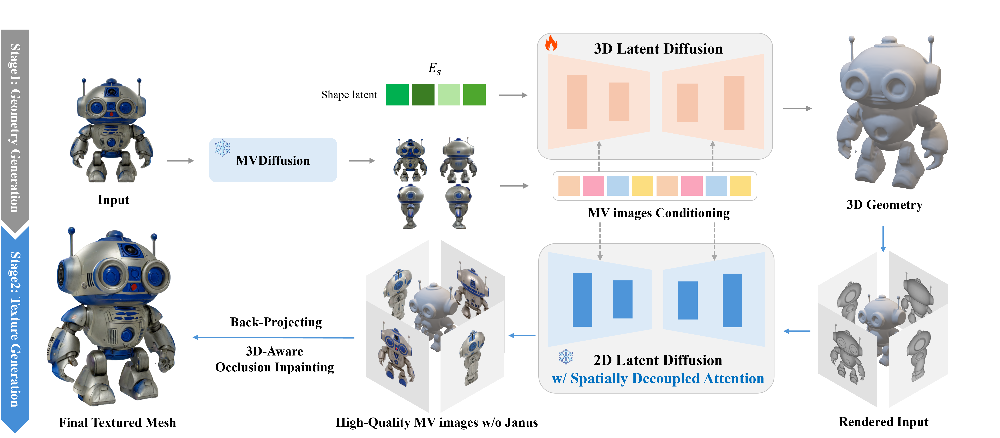
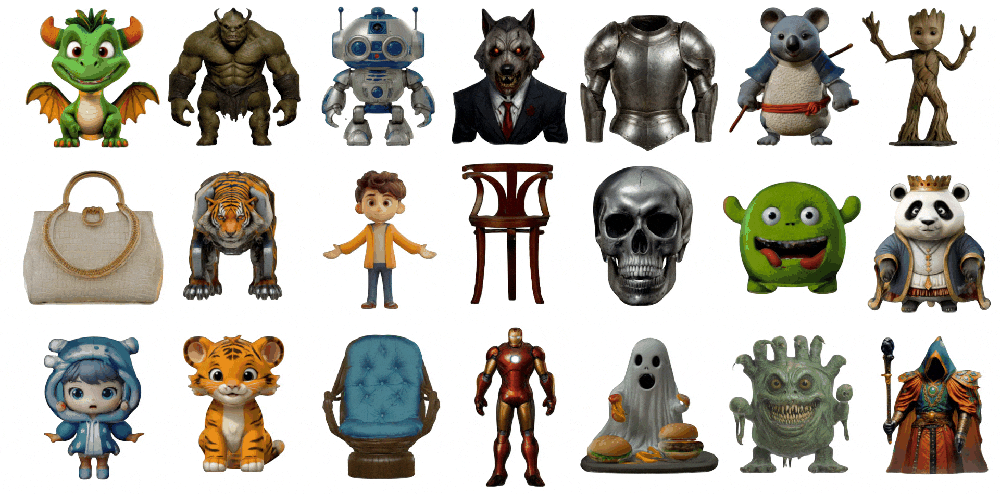

Carve, Then Paint

CaPa separates asset generation into two feed-forward stages. A multi-view guided 3D latent diffusion model first generates an occupancy field that can be converted into a clean polygonal mesh; a 2D latent diffusion model then paints four geometry-aligned views and projects them onto that surface.
For the geometry stage, we trained the ShapeVAE and 3D latent diffusion stack on 150K curated Objaverse assets. The full training run took about eight days on 32 NVIDIA A100 GPUs.
Solving the Janus Problem Without Retraining
Image-to-3D systems frequently duplicate faces and other semantic features across views. CaPa addresses this Janus problem with Spatially Decoupled Attention, assigning each hidden-channel group to its corresponding view region inside the same denoising U-Net.
Because the mechanism is model-agnostic and training-free, the texture stage can directly reuse large pre-trained models such as SDXL, IP-Adapter, and Depth-ControlNet without an architecture-specific multi-view model or additional fine-tuning. It produces geometry-aligned 4K texture detail while preserving view-specific identity.
3D-Aware Occlusion Inpainting
Four orthogonal views cannot observe every surface. For the remaining regions, CaPa clusters occluded faces using their normals and 3D positions, derives a viewpoint for each cluster, and packs the projections into an occlusion-specific UV map that preserves surface locality.
The same 2D diffusion model then restores those regions in a single pass of about five seconds. This reduced visible seams while reaching an FID of 55.23 and KID of 13.46, compared with 128.71 and 37.38 for UV-ControlNet in the paper's evaluation.
4K Texture Generation
The Carve-n-Paint pipeline first constructs stable geometry, then generates texture directly for that surface. CaPa was the first image-to-3D system to generate 4K textures, with the full pipeline running in under 30 seconds.

From Research to VARCO 3D
CaPa showed internally that native 3D generation could move beyond a research demo and become a usable product. That result became a turning point toward NC AI's in-house VARCO 3D service.